Access vă oferă posibilitatea de a lucra cu cantități enorme de date, ceea ce înseamnă că poate fi dificil să aflați ceva despre baza dvs.
de date doar aruncând o privire asupra acesteia.
Sortarea și filtrarea sunt două instrumente care vă permit să personalizați modul în care vă organizați și vizualizați datele,
făcându-l mai ușor de lucrat. În această lecție, veți învăța cum să sortați și să filtrați înregistrările.
În esență, sortarea și filtrarea sunt instrumente care vă permit să vă organizați datele. Când sortați datele, le puneți în ordine.
Filtrarea datelor vă permite să ascundeți datele neimportante și să vă concentrați doar asupra datelor care vă interesează.
Când sortați înregistrările, le puneți într-o ordine logică , cu date similare grupate împreună.
Ca rezultat, datele sortate sunt adesea mai ușor de citit și de înțeles decât datele nesortate.
În mod implicit, Access sortează înregistrările după numerele lor de identificare.
Cu toate acestea, există multe alte moduri în care înregistrările pot fi sortate.
De exemplu, informațiile dintr-o bază de date aparținând unei brutării ar putea fi sortate în mai multe moduri:
-
Comenzile puteau fi sortate după data comenzii sau după numele de familie al clienților care au plasat comenzile.
-
Clienții pot fi sortați după nume sau după oraș sau cod poștal în care locuiesc.
-
Produsele pot fi sortate după nume, categorie (cum ar fi plăcinte, prăjituri și cupcakes) sau preț.
Puteți sorta atât textul , cât și numerele în două moduri: în ordine crescătoare și în ordine descrescătoare.
Ascendent înseamnă a merge în sus, așa că o sortare crescătoare va aranja numerele de la cel mai mic la cel mai mare și textul de la A la Z.
Descreșterea înseamnă a merge în jos , sau de la cel mai mare la cel mai mic pentru numere și de la Z la A pentru text.
Sortarea implicită a numerelor de identificare care apare în tabelele dvs.
este o sortare ascendentă, motiv pentru care cele mai mici numere de identificare apar primele.
-
Selectați un câmp după care doriți să sortați. În acest exemplu, vom sorta după numele de familie ale clienților.
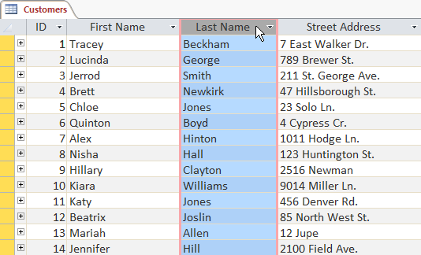
-
Faceți clic pe fila Acasă din Panglică și localizați grupul Sort & Filter.
-
Sortați câmpul selectând comanda Crescător sau Descendent.
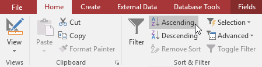
-
Tabelul va fi acum sortat după câmpul selectat.
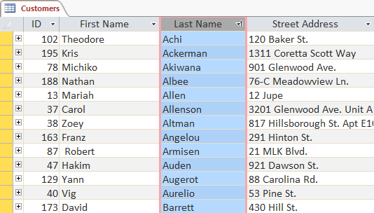
-
Pentru a salva noua sortare, faceți clic pe comanda Salvare din bara de instrumente Acces rapid.
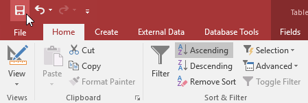
Filtrele vă permit să vizualizaţi numai datele pe care doriţi să le vedeţi.
Când creați un filtru, setați criterii pentru datele pe care doriți să le afișați.
Filtrul caută apoi toate înregistrările din tabel,
le găsește pe cele care îndeplinesc criteriile dvs. de căutare și le ascunde temporar pe cele care nu le îndeplinesc.
Filtrele sunt utile deoarece vă permit să vă concentrați pe anumite înregistrări fără a fi distras de datele de care nu sunteți interesat.
De exemplu, dacă aveți o bază de date care include informații despre clienți și comenzi, puteți crea un filtru pentru a afișa numai clienții care trăiesc.
într-un anumit oraș sau numai comenzi care conțin un anumit produs.
Vizualizarea acestor date cu un filtru ar fi mult mai convenabilă decât căutarea lor într-un tabel mare.
-
Faceți clic pe săgeata derulantă de lângă câmpul pe care doriți să îl filtrați.
Vom filtra după oraș pentru că dorim să vedem o listă cu clienții care locuiesc într-un anumit oraș.
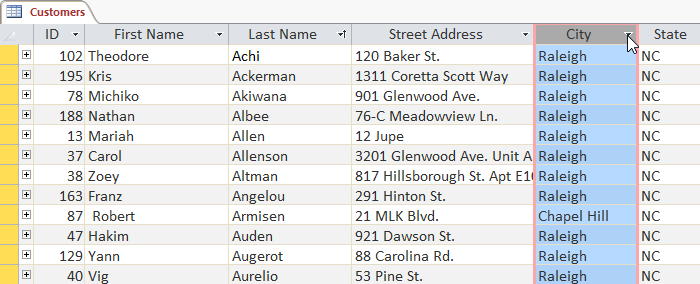
-
Va apărea un meniu derulant cu o listă de verificare.
Doar elementele bifate vor fi incluse în rezultatele filtrate.
Făcând clic pe Selectați tot, veți selecta sau deselecta totul simultan. În exemplul nostru, vom deselecta totul, cu excepția lui Cary.
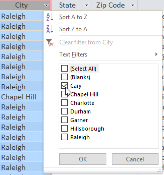
-
Faceți clic pe OK. Se va aplica filtrul. Tabelul nostru cu clienți afișează acum doar clienții care locuiesc în Cary.
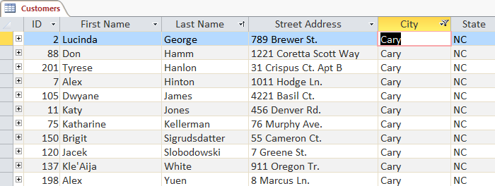
Filtrarea după selecție vă permite să selectați anumite date din tabel și să găsiți date care sunt similare sau diferite cu acestea.
De exemplu, dacă lucrați cu o bază de date a unei brutărie și doriți să căutați toate produsele cu nume care conțin cuvântul ciocolată,
puteți selecta acel cuvânt într-un nume de produs și puteți crea un filtru cu acea selecție.
Crearea unui filtru cu o selecție poate fi mai convenabilă decât configurarea unui filtru simplu dacă câmpul cu care lucrați conține multe elemente.
Puteți alege dintre următoarele opțiuni:
-
Conține include numai înregistrări cu celule care conțin datele selectate.
-
Nu conține include toate înregistrările, cu excepția celor cu celule care conțin datele selectate.
-
Se termină cu include numai înregistrările ale căror date pentru câmpul selectat se termină cu termenul de căutare.
-
Does Not End With include toate înregistrările,
cu excepția celor ale căror date pentru câmpul selectat se termină cu termenul de căutare.
-
Selectați celula sau datele cu care doriți să creați un filtru.
Dorim să vedem o listă cu toate produsele noastre care conțin cuvântul ciocolată în numele lor,
așa că vom selecta cuvântul ciocolată în câmpul Nume produs.
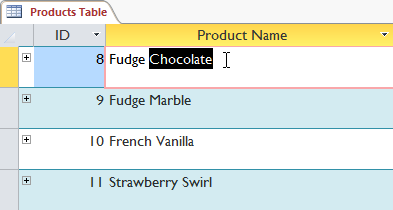
-
Selectați fila Acasă din Panglică, localizați grupul Sortare și filtrare și faceți clic pe săgeata derulantă Selecție.
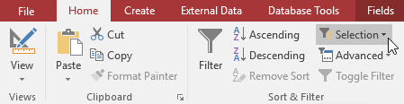
-
Selectați tipul de filtru pe care doriți să îl aplicați.
Vom selecta Conține „Ciocolată” deoarece dorim să vedem înregistrările care conțin cuvântul Ciocolată oriunde în câmp.
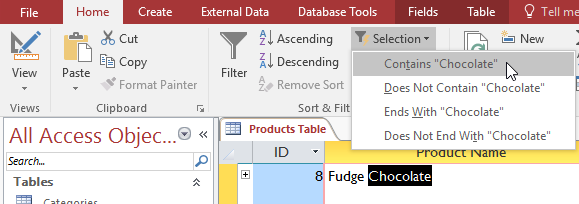
-
Se va aplica filtrul. Tabelul nostru afișează acum numai produse cu cuvântul Ciocolată în numele lor.
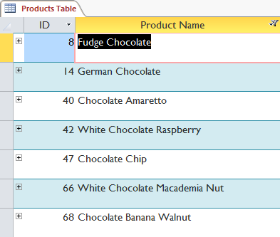
De asemenea, puteți crea un filtru introducând un termen de căutare și specificând modul în care Access ar trebui să potrivească datele cu acel termen.
Crearea unui filtru dintr-un termen de căutare este similară cu crearea unui filtru dintr-o selecție.
Când filtrați text prin introducerea unui termen de căutare,
puteți utiliza unele dintre aceleași opțiuni pe care le utilizați atunci când filtrați după o selecție,
inclusiv Conține, Nu conține, Se termină cu și Nu se termină cu.
De asemenea, puteți alege dintre următoarele opțiuni:
-
Este egal cu, care include numai înregistrări cu date care sunt identice cu datele selectate
-
Does Not Equal, care include toate înregistrările, cu excepția datelor care sunt identice cu selecția
-
Începe cu, care include numai înregistrările ale căror date pentru câmpul selectat încep cu termenul de căutare
-
Does Not Begin With, care include toate înregistrările,
cu excepția celor ale căror date pentru câmpul selectat încep cu termenul de căutare
-
Faceți clic pe săgeata derulantă de lângă câmpul pe care doriți să îl filtrați.
Dorim să filtram înregistrările din tabelul nostru de comenzi pentru
a le afișa doar pe cele care conțin note cu anumite informații, așa că vom face clic pe săgeata din câmpul Note.
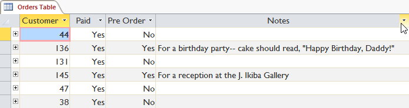
-
În meniul derulant, plasați mouse-ul peste Filtre de text.
Din lista care apare, selectați modul în care doriți ca filtrul să se potrivească cu termenul introdus.
În acest exemplu, dorim să vedem numai înregistrările ale căror note indică că comanda a fost plasată pentru o petrecere.
Vom selecta Conține astfel încât să putem căuta înregistrări care conțin cuvântul partid.
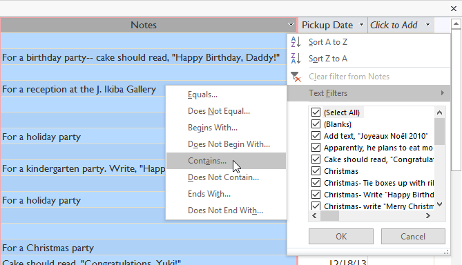
-
Va apărea caseta de dialog Filtru personalizat. Introduceți cuvântul pe care doriți să îl utilizați în filtrul dvs.
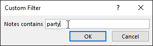
-
Faceți clic pe OK. Se va aplica filtrul.
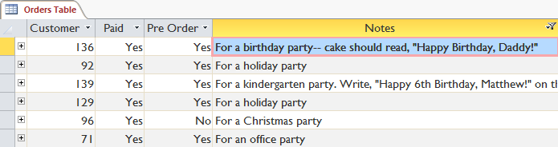
Procesul de filtrare a numerelor cu un termen de căutare este similar cu procesul de filtrare a textului.
Cu toate acestea, vă sunt disponibile diferite opțiuni de filtrare atunci când lucrați cu numere.
Pe lângă Egal și Nu este egal, puteți alege dintre următoarele opțiuni:
-
Mai mare decât pentru a include numai înregistrări cu numere în acel câmp care sunt mai mari sau egale cu numărul pe care îl introduceți
-
Mai puțin decât pentru a include numai înregistrări cu numere în acel câmp care sunt mai mici sau egale cu numărul pe care îl introduceți
-
Între pentru a include înregistrări cu numere care se încadrează într-un anumit interval
-
Faceți clic pe săgeata derulantă de lângă câmpul pe care doriți să îl filtrați.
Dorim să filtram înregistrările din tabelul cu articolele din meniu în funcție de preț, așa că vom face clic pe săgeata din câmpul Preț.
-
În meniul derulant, treceți mouse-ul peste Filtre numerice.
Din lista care apare, selectați modul în care doriți ca filtrul să se potrivească cu termenul dvs. de căutare.
În acest exemplu, dorim să vedem articole care sunt mai mici de 5 USD, așa că vom selecta Mai puțin decât.
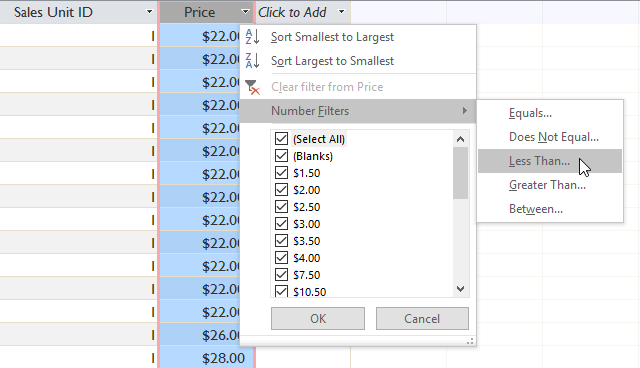
-
Va apărea caseta de dialog Filtru personalizat.
Introduceți numărul sau numerele pe care doriți să le utilizați în filtrul dvs.
Vom introduce 5, astfel încât filtrul ne va arăta numai elementele de meniu care costă 5 USD sau mai puțin.
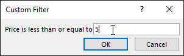
-
Faceți clic pe OK. Se va aplica filtrul.
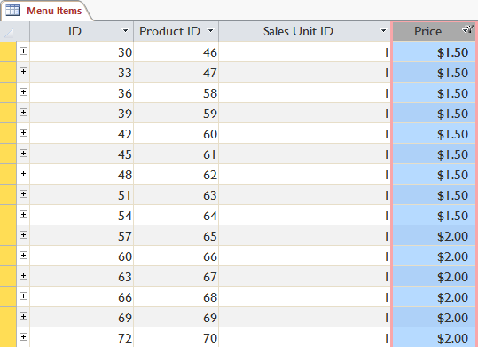